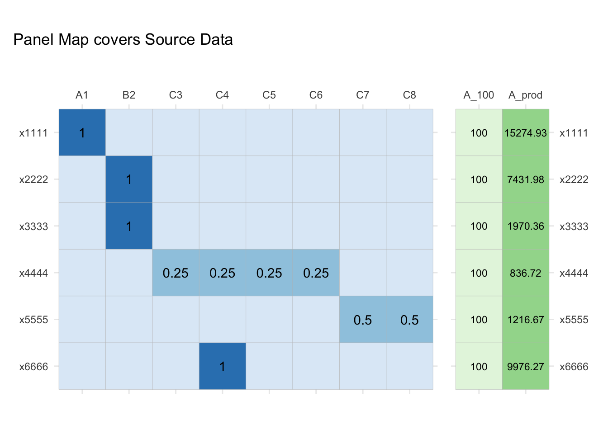

3 Functions
3.1 Panel Map Concepts
3.1.1 Toy Example Setup
## correspondence/concordance table
codes_BA <- dplyr::tribble(~ std_B, ~ std_A,
"A1", "x1111", # one-to-one
"B2", "x2222", # many-to-one
"B2", "x3333",
"C3", "x4444", # one-to-many (4)
"C4", "x4444",
"C4", "x6666", # many-to-many
"C5", "x4444",
"C6", "x4444",
"C7", "x5555", # one-to-many (3)
"C8", "x5555",
)
## panel_map
weights_BA <- codes_BA |>
dplyr::distinct(std_B, std_A) |>
dplyr::group_by(std_A) |>
dplyr::mutate(n_dest = dplyr::n(),
weight = 1 / n_dest) |>
dplyr::ungroup()
pm_BA <- weights_BA |>
dplyr::select(std_B, std_A, weight)Write this data into the package for testing purposes.
equal_pm <- list("codes_BA" = codes_BA,
"weights_BA" = weights_BA,
"pm_BA" = pm_BA)
usethis::use_data(equal_pm, internal = TRUE, overwrite = TRUE)## ✔ Adding 'R' to Depends field in DESCRIPTION
## ✔ Saving 'equal_pm' to 'R/sysdata.rda'3.1.2 Panel Maps as Matrices
We can visualise a panel map as the addition of weights to the concordance:
library(ggplot2)
inc_long <- tidyr::expand(codes_BA, std_A, std_B) |>
dplyr::left_join(pm_BA, by = c("std_A", "std_B")) |>
dplyr::transmute(to = std_B, from = std_A, weight = weight)
gg_inc_mtx <- inc_long |>
plt_inc_long_mtx(to, from, weight) +
ggtitle("Concordance as Incidence Matrix")
gg_pm_mtx <- gg_inc_mtx +
geom_text(data = dplyr::filter(inc_long, !is.na(weight)), aes(label=round(weight, 2))) +
ggtitle("adding equal weights for Valid Panel Map")gg_inc_mtxgg_pm_mtx3.1.3 Panel Maps as Graphs
pm_BA |> plt_pm_sigmoid(std_A, std_B, weight) +
scale_fill_brewer(palette="RdPu", direction = -1)3.2 Generate Default Mapping Weights
3.2.1 Equal Weights
In the most simple case, to make a panel map, we need only a correspondence between a source nomenclature (std_A) and target nomenclature (std_B), which doesn’t have any duplicate rows.
3.2.1.1 Functions
This is a helper function for making a valid Panel Map with equal Mapping Weights from a concordance table.
#' Helper to build equal split panel map
#'
#' Generate panel map using all *distinct* correspondences between two classifications.
#'
#' @param code_dict Data frame containing correspondence between source and destination codes
#' @param code_in Variable in `code_dict` containing source codes to convert from.
#' @param code_out Variable in `code_dict` containing destination codes to convert to.
#' @param .weights_to (optional) new column name for storing weights that will be applied to. The default name is `split_<<code_in>>`.
#' input values.
#'
#' @return Returns panel map as tibble
#' @export
#'
#' @examples
make_pm_equal <- function(code_dict, code_in, code_out, .weights_to = NULL){
## check and remove for duplicates
n_dups <- sum(duplicated(code_dict))
no_dup_links <- n_dups == 0
if (!no_dup_links) {
message("Removing duplicate code_in/code_out rows")
code_dict <- code_dict |>
dplyr::distinct({{code_in}}, {{code_out}})
}
## make column name for weights
.weights_to <- .weights_to %||% paste("split", deparse(substitute(code_in)), sep = "_")
## make panel map
panel_map <- code_dict |>
dplyr::group_by({{code_in}}) |>
dplyr::mutate(n_dest = dplyr::n(),
!!.weights_to := 1 / n_dest) |>
dplyr::ungroup() |>
dplyr::select(-n_dest)
return(panel_map)
}Use this helper on the concordance table defined above:
make_pm_equal(codes_BA, std_A, std_B, "weights")## # A tibble: 10 × 3
## std_B std_A weights
## <chr> <chr> <dbl>
## 1 A1 x1111 1
## 2 B2 x2222 1
## 3 B2 x3333 1
## 4 C3 x4444 0.25
## 5 C4 x4444 0.25
## 6 C4 x6666 1
## 7 C5 x4444 0.25
## 8 C6 x4444 0.25
## 9 C7 x5555 0.5
## 10 C8 x5555 0.5This function uses the no_dup_links flag to removes any duplicate instructions/links, to avoid assigning unequal shares to each target code/category (shown as naive_share):
library(dplyr)
codes <- tribble(~code_in, ~code_out,
"cake", "piece_01",
"cake", "piece_02",
"cake", "piece_03",
"cake", "piece_03" ## duplicated row
)
codes |>
## equal share by code_out
mutate(equal_share = 1 / n_distinct(code_out)) |>
## without duplicates removed
group_by(code_in) |>
mutate("n_dest" = n(),
weight := 1 / n_dest) |>
ungroup() |>
select(-n_dest) |>
group_by(code_out) |>
summarise(
weights = paste(weight, collapse = "+"),
naive_share = sum(weight),
equal_share = unique(equal_share)
)## # A tibble: 3 × 4
## code_out weights naive_share equal_share
## <chr> <chr> <dbl> <dbl>
## 1 piece_01 0.25 0.25 0.333
## 2 piece_02 0.25 0.25 0.333
## 3 piece_03 0.25+0.25 0.5 0.3333.2.1.2 Tests
testthat::test_that(
"make_pm_equal() works",
{
testthat::expect_identical(
make_pm_equal(equal_pm$codes_BA, std_A, std_B, .weights_to = "weight"), equal_pm$pm_BA)
testthat::expect_no_message(
make_pm_equal(equal_pm$codes_BA, std_A, std_B, .weights_to = "weight"))
}
)
testthat::test_that(
"make_pm_equal() handles duplicate link correctly",
{
dup_codes_BA <- rbind(equal_pm$codes_BA, equal_pm$codes_BA[1, ])
testthat::expect_message(
make_pm_equal(dup_codes_BA, std_A, std_B)
)
testthat::expect_identical(
make_pm_equal(dup_codes_BA, std_A, std_B, .weights_to = "weight"), equal_pm$pm_BA
)
}
)## Test passed 😀## Removing duplicate code_in/code_out rows## Test passed 🌈3.3 Valid Panel Maps
3.3.1 Complete Weights
A valid panel map is an mapping from source to target nomenclatures which when applied to suitably dimensioned source data, transforms that data into the target nomenclature without creation or loss of value (beyond floating point rounding). This can also be thought of as a condition whereby the sum total of a variable remains the same before and after the transformation.
The following condition is necessary and sufficient for a set of Source Codes, Target Codes and Mapping Weights to be a valid panel map:
The sum of all Mapping Weights associated with any given Source Code totals to 1
To demonstrate, let us generate some source data:
## generate some data
set.seed(1832)
std_A_codes <- unique(codes_BA$std_A)
(data_in <-
dplyr::tibble(std_A = std_A_codes,
A_100 = 100,
A_prod = round(abs(rnorm(length(std_A_codes)) * 10000),2)
)
)## # A tibble: 6 × 3
## std_A A_100 A_prod
## <chr> <dbl> <dbl>
## 1 x1111 100 15275.
## 2 x2222 100 7432.
## 3 x3333 100 1970.
## 4 x4444 100 837.
## 5 x6666 100 9976.
## 6 x5555 100 1217.Now let’s switch to using the matrix representation of panel maps:
Let \(\bf{C}\) be a \(n \times m\) matrix showing the incidence between two disjoint sets (inc_mtx), and let \(\bf{X}\) be the source variables (x_mtx) requiring transformation. Then, the transformed data is \(\bf{Z} = \bf{C'X}\):
## incidence matrix
inc_mtx <- inc_long |>
tidyr::replace_na(list(weight=0)) |>
inc_long_to_mtx(to, weight)
## source data matrix
x_mtx <- as.matrix(data_in[,-1])
dimnames(x_mtx)[[1]] <- std_A_codes
## transformed data
z_mtx <- t(inc_mtx) %*% x_mtxround(t(inc_mtx), 2)## x1111 x2222 x3333 x4444 x5555 x6666
## A1 1 0 0 0.00 0.0 0
## B2 0 1 1 0.00 0.0 0
## C3 0 0 0 0.25 0.0 0
## C4 0 0 0 0.25 0.0 1
## C5 0 0 0 0.25 0.0 0
## C6 0 0 0 0.25 0.0 0
## C7 0 0 0 0.00 0.5 0
## C8 0 0 0 0.00 0.5 0print(x_mtx)## A_100 A_prod
## x1111 100 15274.93
## x2222 100 7431.98
## x3333 100 1970.36
## x4444 100 836.72
## x6666 100 9976.27
## x5555 100 1216.67print(z_mtx)## A_100 A_prod
## A1 100 15274.930
## B2 200 9402.340
## C3 25 209.180
## C4 125 1425.850
## C5 25 209.180
## C6 25 209.180
## C7 50 4988.135
## C8 50 4988.135Notice that the sum total of A_100 is the same before and after the transformation.
colSums(x_mtx)## A_100 A_prod
## 600.00 36706.93colSums(z_mtx)## A_100 A_prod
## 600.00 36706.93Now, let’s edit the panel map such that the weights no longer sum to one:
## edit weights
bad_pm <- pm_BA |>
dplyr::mutate(weight = dplyr::case_when(
weight == 1 ~ weight,
weight < 0.5 ~ weight - 0.03,
weight >= 0.5 ~ weight + 0.01,
T ~ weight))
## incidence matrix
bad_mtx <- bad_pm |>
inc_long_to_mtx(std_B, weight)
bad_mtx[is.na(bad_mtx)] <- 0
## transform data badly
bad_z <- t(bad_mtx) %*% x_mtxNotice what happens when we apply the transformation:
round(t(bad_mtx), 2)## x1111 x2222 x3333 x4444 x6666 x5555
## A1 1 0 0 0.00 0 0.00
## B2 0 1 1 0.00 0 0.00
## C3 0 0 0 0.22 0 0.00
## C4 0 0 0 0.22 1 0.00
## C5 0 0 0 0.22 0 0.00
## C6 0 0 0 0.22 0 0.00
## C7 0 0 0 0.00 0 0.51
## C8 0 0 0 0.00 0 0.51print(x_mtx)## A_100 A_prod
## x1111 100 15274.93
## x2222 100 7431.98
## x3333 100 1970.36
## x4444 100 836.72
## x6666 100 9976.27
## x5555 100 1216.67print(bad_z)## A_100 A_prod
## A1 100 15274.9300
## B2 200 9402.3400
## C3 22 184.0784
## C4 122 10160.3484
## C5 22 184.0784
## C6 22 184.0784
## C7 51 620.5017
## C8 51 620.5017Notice that the sum totals are no longer the same before and after the transformation:
colSums(x_mtx)## A_100 A_prod
## 600.00 36706.93colSums(bad_z)## A_100 A_prod
## 590.00 36630.86Hence, the validity condition can also be expressed as follows: > A given incidence matrix \(\bf{K}\) with dimensions \(n \times m\) is a valid panel map if and only if \(\bf{K}\boldsymbol{1} = \boldsymbol{1}\) where \(\boldsymbol{1}\) is a unit vector of length \(m\):
ones <- rep_len(1, ncol(inc_mtx))round(inc_mtx, 2)## A1 B2 C3 C4 C5 C6 C7 C8
## x1111 1 0 0.00 0.00 0.00 0.00 0.0 0.0
## x2222 0 1 0.00 0.00 0.00 0.00 0.0 0.0
## x3333 0 1 0.00 0.00 0.00 0.00 0.0 0.0
## x4444 0 0 0.25 0.25 0.25 0.25 0.0 0.0
## x5555 0 0 0.00 0.00 0.00 0.00 0.5 0.5
## x6666 0 0 0.00 1.00 0.00 0.00 0.0 0.0inc_mtx %*% ones## [,1]
## x1111 1
## x2222 1
## x3333 1
## x4444 1
## x5555 1
## x6666 13.3.1.1 Functions
#' Flag Bad Mapping Weights
#'
has_bad_weights <- function(pm, code_in, code_out, weights){
bad_rows <- pm %>%
dplyr::group_by({{code_in}}) %>%
dplyr::summarise(total = sum({{weights}}),
weights = paste({{weights}}, collapse=",")) %>%
dplyr::filter(total != 1)
is_bad <- !(nrow(bad_rows) == 0)
result <- list(bool = is_bad,
table = bad_rows)
return(result)
}
#' Check panel map weights are valid
#'
#' for use in pipes
#'
#' @param pm Data Frame containing weighted links `weights` between `code_in` and `code_out`.
#' @inherit make_pm_equal
#' @param weights Column containing weights for transforming values from `code_in` to `code_out`
#'
#' @exports
#'
#' @returns
check_pm_weights <- function(pm, code_in, code_out, weights){
has_result <- has_bad_weights(pm, {{code_in}}, {{code_out}}, {{weights}})
if (!has_result$bool){
return(pm)
} else {
# TODO: add informative error message
return(has_result$table)
}
}3.4 Valid Transformations
3.4.1 Source Code Coverage
A Panel Map must cover all Source Codes present in the Source Data. In other words, for a transformation to be valid, no Source Data should be left behind.
gg_x_mtx <- plt_df_mtx(data_in, A_100:A_prod, std_A)
library(patchwork)
gg_pm_mtx +
guides(fill="none") +
ggtitle("") + gg_x_mtx +
scale_y_discrete(position="right", limits=rev) +
patchwork::plot_annotation(title="Panel Map covers Source Data")##
## Attaching package: 'patchwork'## The following object is masked from 'package:cowplot':
##
## align_plots## Scale for 'y' is already present. Adding another scale for 'y', which will
## replace the existing scale.
gg_x_bad <- data_in |>
dplyr::add_row(std_A = "x7285!",
A_100 = 100,
A_prod = 3895.3) |>
plt_df_mtx(A_100:A_prod, std_A)
gg_pm_bad <- tidyr::expand_grid(from=c(NA), to=unique(codes_BA$std_B)) |>
dplyr::mutate(weight=NA) |>
bind_rows(inc_long) |>
plt_inc_long_mtx(to, from, weight) +
geom_text(data = dplyr::filter(inc_long, !is.na(weight)), aes(label=round(weight, 2)))
library(patchwork)
gg_pm_bad +
guides(fill="none") +
ggtitle("") +
gg_x_bad +
scale_y_discrete(position="right", limits=rev) +
scale_fill_brewer(palette="Purples") +
patchwork::plot_annotation(title="Panel Map does not cover fully Source Data")## Scale for 'y' is already present. Adding another scale for 'y', which will
## replace the existing scale.## Scale for 'fill' is already present. Adding another scale for 'fill', which
## will replace the existing scale. Depending on how the transformation is implemented, coverage mismatches can result in both explicit and implicit/hidden errors. In particular, having conformable matrix dimensions is not sufficient to avoid corrupting data unless you check that the indices match. This is a common issue with using matrices for data wrangling, so this package implements transformations using database operations.
Depending on how the transformation is implemented, coverage mismatches can result in both explicit and implicit/hidden errors. In particular, having conformable matrix dimensions is not sufficient to avoid corrupting data unless you check that the indices match. This is a common issue with using matrices for data wrangling, so this package implements transformations using database operations.

3.5 Use Panel Map on Data
Assuming all the validity conditions are met, we want a simple and concise way to apply a panel map to data which looks something like:
## --- encode your transformation --- ##
df_pm <- read_csv("your-panel-map.csv") |>
conform::validate_panel_map()
## --- prepare source data --- ##
df_data_in <-
read_csv("your-source-data.csv") |>
drop_na() |>
conform::validate_coverage()
## --- apply (valid) transformation --- ##
conformr::use_panel_map(map = df_pm,
data_in = df_data_in,
values_from = value_in,
from_code = source_code,
to_code = target_code,
weights = weight,
suffix="_out")3.5.1 Functions
This function takes a valid panel map and data with matching names for the Source Code columns and transforms the data to the Target Classification.
#' Apply panel_map to data without checks
#'
#' A wrapper around a `{dplyr}` pipeline that takes a panel_map,
#' joins it with data, and transforms selected variables in that data according to
#' instructions in the panel map. Any groups in `data` are preserved.
#'
#' @param map A data frame that contains a valid panel map for the transformation.
#' @param data A data frame for transformation.
#' @param values_from Variable in `data` containing the values to be converted.
#' @param from_code A character string of the variable containing the codes to convert from.
#' Must be the same in `map` and `data`.
#' @param to_code Variable in `map` containing the codes to convert to.
#' @param weights Variable in `map` containing the weights to split values by.
#' @param .suffix A string appended to `value_from` column name to create column names for transformed values.
#' Defaults to `to_code`
#'
#' @param
#'
#' @return The output has the following properties:
#' * Groups are taken from `data_in`
#' @export
#'
#' @examples
use_panel_map <- function(map, data_in, values_from, from_code, to_code, weights,
.suffix = NULL){
# convert from_code to string
from_code <- as_string(enexpr(from_code))
# subset data for transformation
data_in <- data_in %>%
dplyr::select(dplyr::all_of(from_code), {{values_from}})
# merge map and data // use default by= argument
map_join_data <- dplyr::right_join(x = data_in,
y = map,
by = from_code)
# apply transformation
data_out <- map_join_data %>%
dplyr::mutate(dplyr::across({{ values_from }}, ~ .x * {{ weights }})) %>%
dplyr::group_by({{ to_code }}, .add = TRUE) %>%
dplyr::summarise(dplyr::across({{ values_from }}, ~ sum(.x)), .groups = "drop_last")
# rename
names_suffix <- .suffix %||% paste0("_", as_string(enexpr(to_code)))
data_out <- data_out %>%
dplyr::rename_with(., ~ paste0(.x, names_suffix), .cols = {{ values_from }})
return(data_out)
}